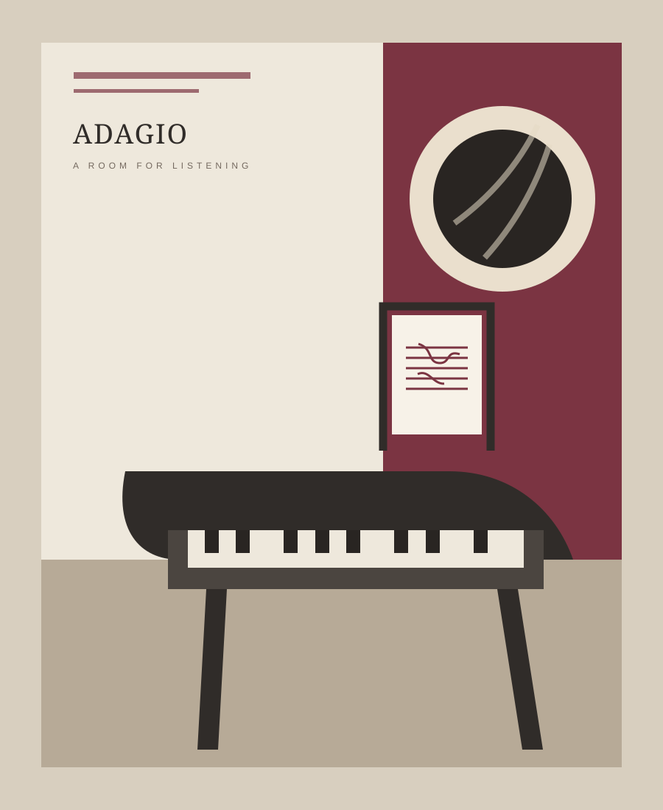
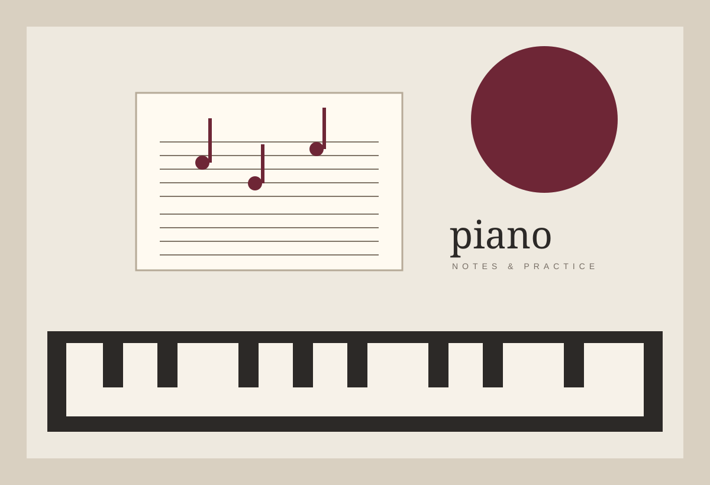
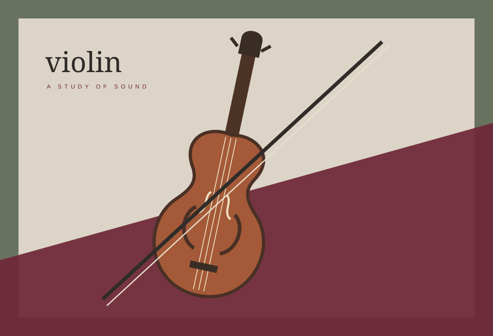

Выпуск № 09 · Осень 2026
Музыка, к которой хочется вернуться
Практика без спешки, ясная теория и произведения, которые становятся частью вашей жизни.
Открыть каталог
Иллюстрация редакции · Камертона
Главная история
Все публикации
Материал номера
Читают чаще всего
Популярные материалы

Инструмент крупным планом
Фортепиано
От первого прикосновения к клавишам до внимательной работы над фразой. Материалы, которые помогают заниматься регулярно и слышать больше.
Все о фортепиано
Тонкая настройка
Скрипка
Свободная постановка, чистая интонация и красивый звук. Понятные ориентиры для первых месяцев знакомства с инструментом.
Все о скрипке
Понять, чтобы услышать
Весь раздел
Теория музыки
С чего начать слушать и играть
Все подборки
Тематические подборки
Свежие заметки
Последние публикации
Слушать
внимательнее
«Камертона» — независимый блог о музыке как личном пространстве. Мы пишем для взрослых начинающих, любителей и всех, кому важны не рекорды, а любопытство и живой контакт со звуком.
Познакомиться с блогом